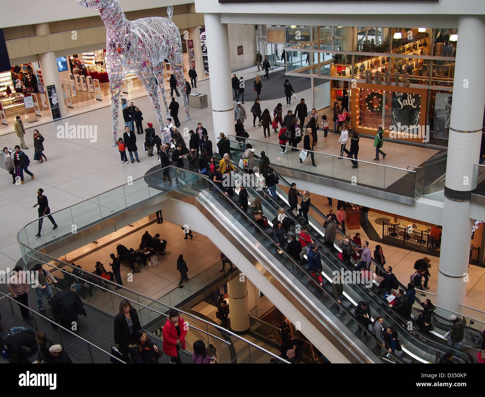
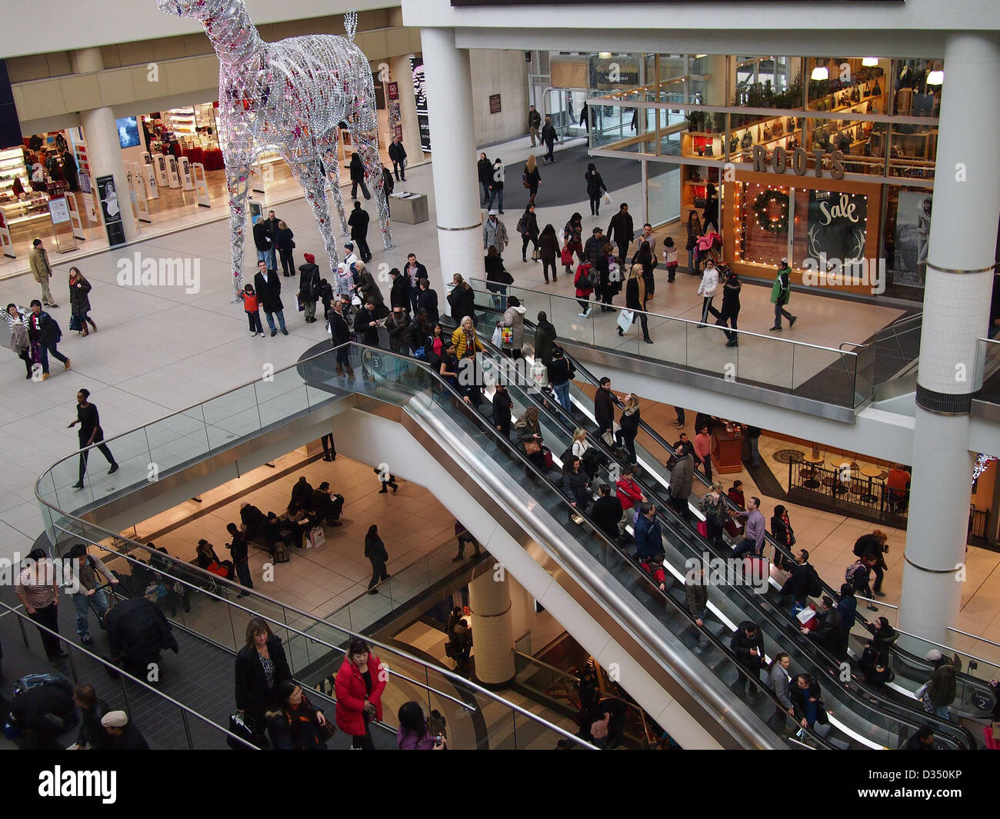
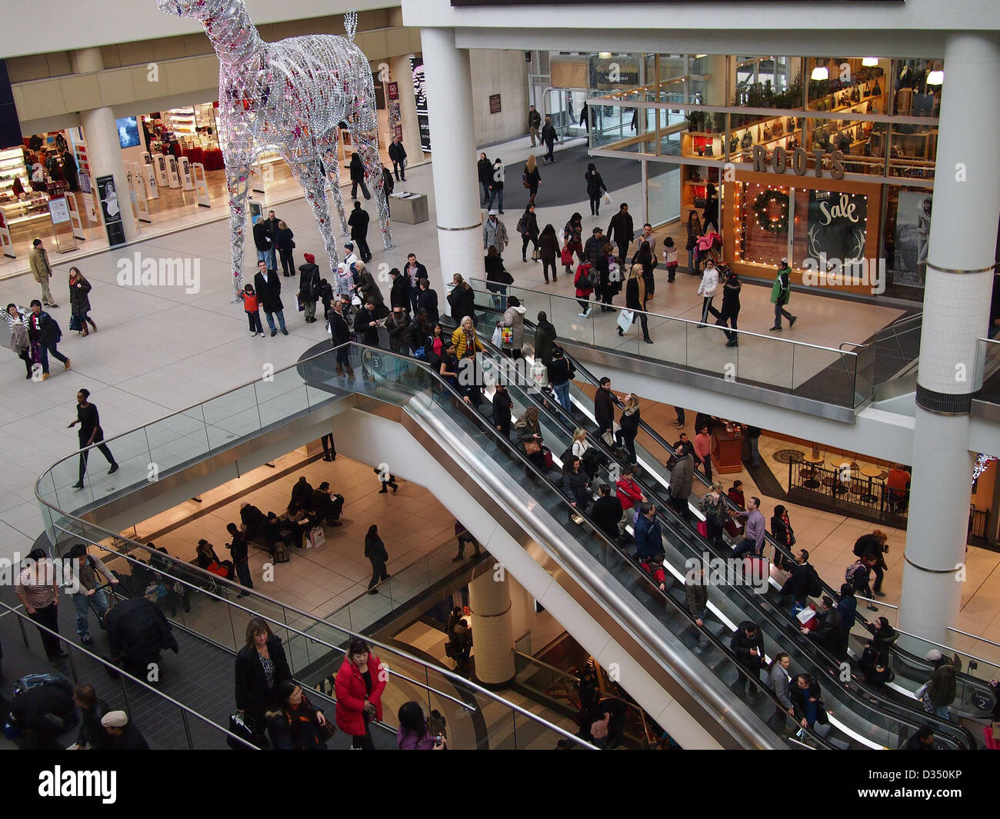

Pine City Mall is the premier shopping destination in the city, offering a wide range of retail stores, dining options, and entertainment facilities. Our goal is to provide a unique shopping experience for all visitors.
Founded in 2000, Sunshine Mall has been serving the community for over two decades. With continuous improvements and expansions, we have grown to become one of the largest and most popular malls in the region. Our commitment to excellence has made us a favorite among locals and tourists alike.
Pine City Mall boasts a wide array of facilities and services designed to cater to all your needs. Some of the highlights include:
